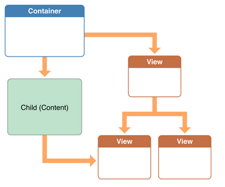
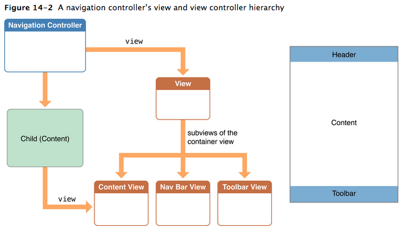
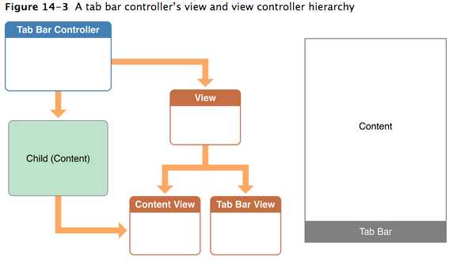

自定义Container View Controllers
多数情况下，container view controller 就像普通的view controller。它管理着view，内容，与其他对象协同工作，并且响应在repsonder chain里的事件。
当你设计一个container的时候，你需要显式的在你的container，和它的子controller之间创建父子关系。如下图。注意，不仅仅controller之间需要显式的指定关系，view之间的关系也需要显式的指定。

常见的Container设计的例子
Navigation Controller管理着一些由子View Controller组成的栈
如图所示，Navigation Controller管理着一系列不同的子ViewController。在这个栈最上面的ViewController的View会被显示出来。

Navigation Controller定义了一些行为
- topViewController -- 目前显示的vc
- viewControllers -- 所有子vc
- pushViewController:animated: -- 显示
- popViewControllerAnimated: -- 弹出
- delegate -- 可以让使用者当状态改变的时候收到通知
Navigation Controller 使用子VC的一些属性来改变当前显示的内容。
- navigationItem -- 提供了navigation toolbar的内容
- toolbarItem -- 提供了底部bar的内容
- editButtonItem -- 提供了可以从navigation item访问子view的途径，这样就可以改变子view的edit mode
Tab Bar Controller使用一个子VC的集合

Tab Bar Controller定义了一些行为：
- viewControllers -- 所有子vc
- selectedViewController -- 设置或读取哪个子vc
- delegate -- 可以让使用者当状态改变的时候收到通知
Tab Bar Controller 使用子VC的一些属性来改变当前显示的内容。
- tabBarItem -- 提供了底部bar的内容
Page Controller使用DataSource去显示新的子VC
Page Controller支持无限多的页面显示，所以把所有的page都放在内存中是不可能的。相反，page controller在需要的时候拉取需要的page。这样page controller就使用一个pull model而不是让app把所有的page一下子push到里面
Page Controller定义了一些行为：
- spineLocation -- 定义page是如何组织的，有时候只显示一个page，有时候需要两个
- transitionStyle -- 定义了过场动画的风格
实现自定义Container Controller
增加和移除子vc
始终应该记住的是，在addSubview之前addChildViewController,在removeFromSuperVieww之后removeFromParentViewController。
另外，设置子view的大小最好也在addSubview之前
增加
- (void) displayContentController: (UIViewController*) content;
{
[self addChildViewController:content];
content.view.frame = [self frameForContentController];
[self.view addSubview:self.currentClientView];
[content didMoveToParentViewController:self];
}
addChildViewController会自动调用willMoveToPa
移除
- (void) hideContentController: (UIViewController*) content
{
[content willMoveToParentViewController:nil];
[content.view removeFromSuperview];
[content removeFromParentViewController];
}
简单的转场动画
- (void) cycleFromViewController: (UIViewController*) oldC
toViewController: (UIViewController*) newC
{
[oldC willMoveToParentViewController:nil];
[self addChildViewController:newC];
newC.view.frame = [self newViewStartFrame];
CGRect endFrame = [self oldViewEndFrame];
[self transitionFromViewController: oldC toViewController: newC
duration: 0.25 options:0
animations:^{
newC.view.frame = oldC.view.frame;
oldC.view.frame = endFrame;
}
completion:^(BOOL finished) {
[oldC removeFromParentViewController];
[newC didMoveToParentViewController:self];
}];
}
自定义显示和旋转的Callback行为
多数时候不用管这个事情，但是有时候你希望自己控制消息发送的时机之类的情况
- (BOOL) shouldAutomaticallyForwardAppearanceMethods
{
return NO;
}
-(void) viewWillAppear:(BOOL)animated
{
[self.child beginAppearanceTransition: YES animated: animated];
}
-(void) viewDidAppear:(BOOL)animated
{
[self.child endAppearanceTransition];
}
-(void) viewWillDisappear:(BOOL)animated
{
[self.child beginAppearanceTransition: NO animated: animated];
}
-(void) viewDidDisappear:(BOOL)animated
{
[self.child endAppearanceTransition];
}
旋转与显示类似，首先要重载shouldAutomaticallyForwardRotationMethods，然后在合适的地方调用
willRotateToInterfaceOrientation:duration:willAnimateRotationToInterfaceOrientation:duration:didRotateFromInterfaceOrientation:
Best practices
- 不要干这事！！因为毕竟实现一个复杂的container不是一件容易的事情
- 只访问子VC的最顶层的那个View，其他View不要碰！
- 如果需要子VC暴露一些接口，可以使用protocol！
如下
@protocol MyContentContainerProtocol <NSObject>
...
@end
- (void) displayContentController: (UIViewController<MyContentContainerProtocol>*) content;